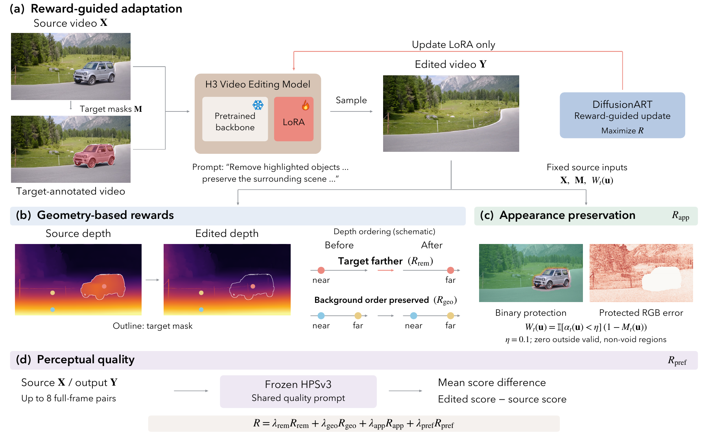

Reveal what lies behind.
Target-depth feedback encourages farther content in removal regions, while relative depth ordering constrains the surrounding geometry.
Remove Anything with H3Remover
THE RESULTS
From city traffic to people, animals and everyday objects.
Moving comparisons across real-world scenes.
THE IDEA
A pretrained video editor already knows how to reconstruct a scene.
H3Remover reinforces when—and where—to make a change.
H3Remover (H3 Remover) adapts MiniMax-H3 Base Ref2VA for video object removal without paired object-free training targets. Source-conditioned rewards encourage target removal while constraining changes to the surrounding scene. DiffusionART updates lightweight LoRA adapters while the pretrained backbone remains frozen.
Target-depth feedback encourages farther content in removal regions, while relative depth ordering constrains the surrounding geometry.
Binary protection masks preserve background appearance while allowing estimated object-associated effects to change.
Frozen HPSv3 supplies complementary perceptual feedback alongside the explicit removal and preservation rewards.

THE PAPER
1 XPeng Motors2 The Chinese University of Hong Kong3 Tsinghua University4 Institute of Automation, Chinese Academy of Sciences
* Equal contribution † Corresponding author